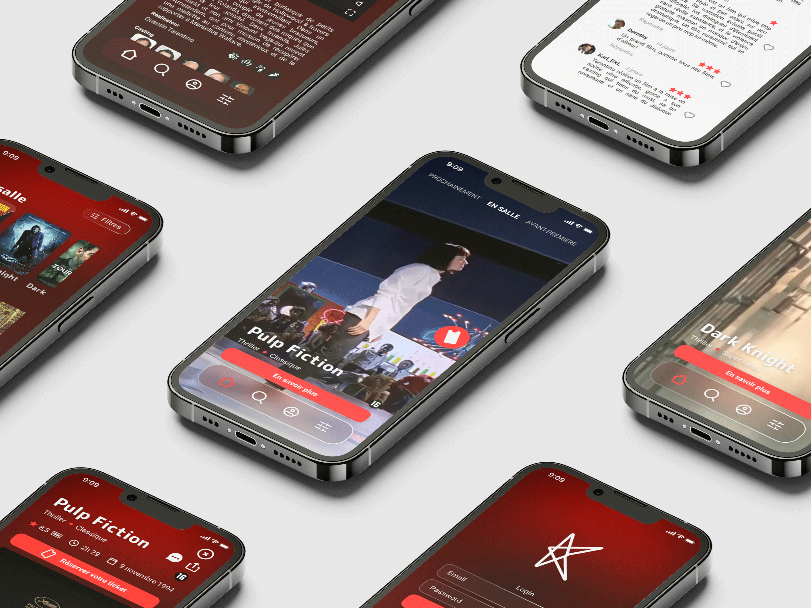

Kinepolis — Le chemin le plus court vers le bon siège

Comment rendre fluide un parcours d'achat naturellement complexe ? Commander un billet de cinéma implique une succession de décisions — film, séance, salle, siège, tarif, paiement — chacune pouvant générer de la friction et de l'abandon. Pour ce projet de conception end-to-end, l'enjeu était de transformer ce tunnel en une expérience mobile claire, rapide et rassurante.
Le Contexte
Exercice de conception UX/UI sur un cas réel : repenser l'application de commande de billets de Kinepolis. L'objectif — concevoir un parcours d'achat mobile de bout en bout, de la sélection du film à la confirmation de réservation.
Mon Rôle
Designer UX/UI en charge de la conception complète — définition des flows utilisateurs, wireframes, maquettes haute-fidélité et logique d'interaction.
Les Contraintes
- Tunnel multi-étapes — Film, séance, salle, siège, tarif, paiement : enchaîner sans perdre l'utilisateur.
- Mobile-first — Concevoir pour une décision rapide, en situation, sur smartphone.
- Cohérence de marque — S'inscrire dans l'univers Kinepolis tout en modernisant l'expérience.
L'Approche
- Réduction de friction — Identifier et supprimer chaque étape superflue dans le tunnel d'achat.
- Hiérarchie visuelle — Guider l'œil vers les informations clés à chaque écran (horaire, salle, prix).
- Feedback immédiat — Confirmer chaque sélection pour rassurer l'utilisateur tout au long du parcours.
Le Résultat
Un parcours d'achat en étapes claires, avec une interface mobile épurée. La sélection de siège et le tunnel de paiement ont été repensés pour minimiser les abandons et maximiser la lisibilité à chaque point de décision.
